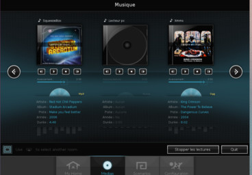
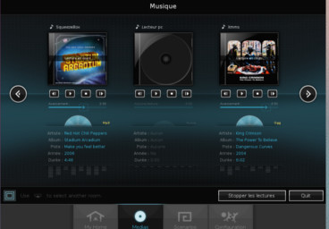

Welcome Home !
After a long working day, relax! When going home, Calaos will prepare a sweet environment. Shutters are closed, lights dimmed, favourite music starts to play.

After a long working day, relax! When going home, Calaos will prepare a sweet environment. Shutters are closed, lights dimmed, favourite music starts to play.

Share all your music across the entire house. Don't look where you have it, don't transfer anymore, just hit play in the room you are to listen your favourite playlists.
All items linked to Calaos can be automated per time, ambience or mood. Your home become smart starting today. Creating a scenario is done in a few click on the touchscreen.
We have written tools that lets you easily configure your home right from your computer. Want to add more items to you system? Just install Calaos Installer.

Calaos is full solution for home automation. It was first a system developed by a french company of the same name. When the company was closed during 2013, the entire code base was open sourced and released as GPL. A small community started around the project to continue the development.
The community is growing every day, the wiki and forum are here to share informations and good ideas. Don't hesitate to contact and help us!


We support a lot: Wago PLC, Raspberry Pi, Zodianet's ZiBASE, Cubieboard,
Squeezebox, CCTV, ... We have done the hard work. And we are going to support more and more hardware platforms.
Besides, with Calaos OS it's just a matter of burning a memory card and you have a complete working software installation.
 


With Calaos you can quickly and easily install yourself a complete installation. The community is here to help you. The Wiki is full of documentation on how it works, and the forum is here to get an answer will all your specific questions. Don't be afraid, plenty of user are here to help.